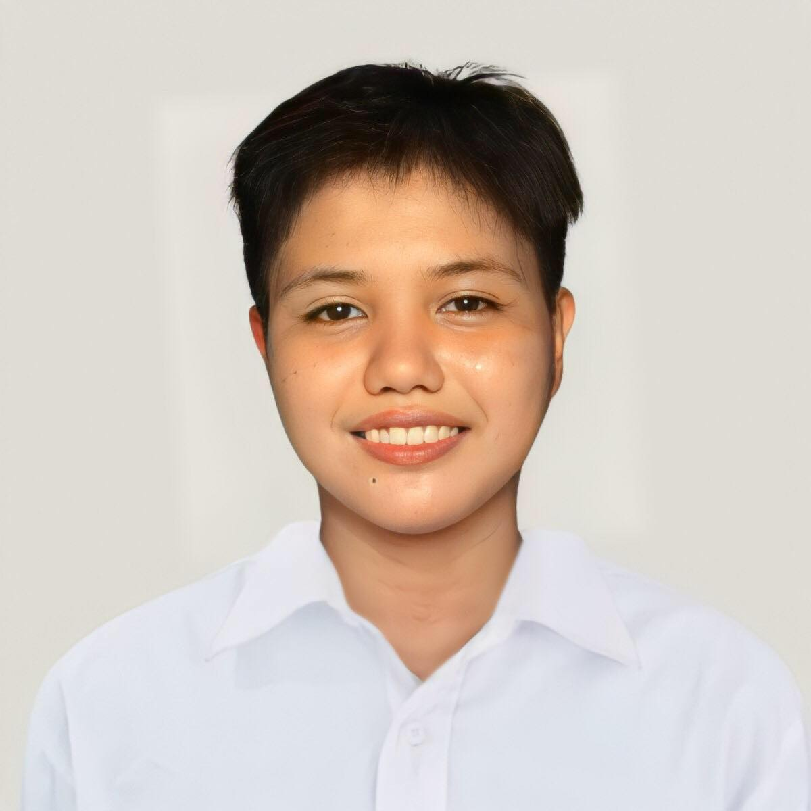

Project Manager
Responsible for project planning and oversight to ensure projects are completed on time and within budget.

To obtain a challenging and rewarding position that allows me to integrate myself with my coworkers and the company, thereby increasing its profitability and providing a better prospect for my career by utilizing my proven track records in the fields of architecture and management.
Responsible for project planning and oversight to ensure projects are completed on time and within budget.
In charge of overall project cost, schedule, and documentation supervision, reporting project updates and status to the owner, and providing management support and leading coordination with the owner's side on project issues.
Officer-in-Charge of the Architectural Department, in charge of managing programs and academic wellness, as well as giving lectures on design topics to Architecture students.
In charge of overall project cost, schedule, and documentation supervision, reporting project updates and status to the owner, and providing management support and leading coordination with the owner side on project issues.